Open and Plot Vector Layers
Last updated on 2026-07-07 | Edit this page
Estimated time: 60 minutes
Overview
Questions
- How can I distinguish between and visualize point, line and polygon vector data?
Objectives
- Know the difference between point, line, and polygon vector elements.
- Load point, line, and polygon vector layers into R.
- Access the attributes of a spatial object in R.
Things You’ll Need To Complete This Episode
See the lesson homepage for detailed information about the software, data, and other prerequisites you will need to work through the examples in this episode.
Introduce the Data
If not already discussed, introduce the datasets that will be used in this lesson. A brief introduction to the datasets can be found on the Geospatial workshop homepage.
For more detailed information about the datasets, check out the Geospatial workshop data page.
In this episode, we will open and plot point, line and polygon vector
data loaded from ESRI’s shapefile format into R. These data
refer to the NEON
Harvard Forest field site, which we have been working with in
previous episodes. In later episodes, we will learn how to work with
raster and vector data together and combine them into a single plot.
Import Vector Data
We will use the sf package to work with vector data in
R. sf stands for simple
features, an international standard for representing spatial data
that is used widely by databases (e.g., PostGIS) and other open source
geospatial software (e.g., GDAL). We will also use the
terra package, which has been loaded in previous episodes,
so we can explore raster and vector spatial metadata using similar
commands.
Make sure you have the sf library loaded.
R
library(sf)
The vector layers that we will import from ESRI’s
shapefile format are:
- A polygon vector layer representing our field site boundary,
- A line vector layer representing roads, and
- A point vector layer representing the location of the Fisher flux tower located at the NEON Harvard Forest field site.
The first vector layer that we will open contains the boundary of our
study area (or our Area Of Interest or AOI, hence the name
aoiBoundary). To import a vector layer from an ESRI
shapefile we use the sf function
st_read(). st_read() requires the file path to
the ESRI shapefile.
Let’s import our AOI:
R
aoi_boundary_harv <- st_read(
"data/NEON-DS-Site-Layout-Files/HARV/HarClip_UTMZ18.shp")
OUTPUT
Reading layer `HarClip_UTMZ18' from data source
`/home/runner/work/r-raster-vector-geospatial/r-raster-vector-geospatial/site/built/data/NEON-DS-Site-Layout-Files/HARV/HarClip_UTMZ18.shp'
using driver `ESRI Shapefile'
Simple feature collection with 1 feature and 1 field
Geometry type: POLYGON
Dimension: XY
Bounding box: xmin: 732128 ymin: 4713209 xmax: 732251.1 ymax: 4713359
Projected CRS: WGS 84 / UTM zone 18NVector Layer Metadata & Attributes
When we import the HarClip_UTMZ18 vector layer from an
ESRI shapefile into R (as our
aoi_boundary_harv object), the st_read()
function automatically stores information about the data. We are
particularly interested in the geospatial metadata, describing the
format, CRS, extent, and other components of the vector data, and the
attributes which describe properties associated with each individual
vector object.
Spatial Metadata
Key metadata for all vector layers includes:
- Object Type: the class of the imported object.
- Coordinate Reference System (CRS): the projection of the data.
- Extent: the spatial extent (i.e. geographic area that the vector layer covers) of the data. Note that the spatial extent for a vector layer represents the combined extent for all individual objects in the vector layer.
We can view metadata of a vector layer using the
st_geometry_type(), st_crs() and
st_bbox() functions. First, let’s view the geometry type
for our AOI vector layer:
R
st_geometry_type(aoi_boundary_harv)
OUTPUT
[1] POLYGON
18 Levels: GEOMETRY POINT LINESTRING POLYGON MULTIPOINT ... TRIANGLEOur aoi_boundary_harv is a polygon spatial object. The
18 levels shown below our output list the possible categories of the
geometry type. Now let’s check what CRS this file data is in:
R
st_crs(aoi_boundary_harv)
OUTPUT
Coordinate Reference System:
User input: WGS 84 / UTM zone 18N
wkt:
PROJCRS["WGS 84 / UTM zone 18N",
BASEGEOGCRS["WGS 84",
DATUM["World Geodetic System 1984",
ELLIPSOID["WGS 84",6378137,298.257223563,
LENGTHUNIT["metre",1]]],
PRIMEM["Greenwich",0,
ANGLEUNIT["degree",0.0174532925199433]],
ID["EPSG",4326]],
CONVERSION["UTM zone 18N",
METHOD["Transverse Mercator",
ID["EPSG",9807]],
PARAMETER["Latitude of natural origin",0,
ANGLEUNIT["Degree",0.0174532925199433],
ID["EPSG",8801]],
PARAMETER["Longitude of natural origin",-75,
ANGLEUNIT["Degree",0.0174532925199433],
ID["EPSG",8802]],
PARAMETER["Scale factor at natural origin",0.9996,
SCALEUNIT["unity",1],
ID["EPSG",8805]],
PARAMETER["False easting",500000,
LENGTHUNIT["metre",1],
ID["EPSG",8806]],
PARAMETER["False northing",0,
LENGTHUNIT["metre",1],
ID["EPSG",8807]]],
CS[Cartesian,2],
AXIS["(E)",east,
ORDER[1],
LENGTHUNIT["metre",1]],
AXIS["(N)",north,
ORDER[2],
LENGTHUNIT["metre",1]],
ID["EPSG",32618]]Our data in the CRS UTM zone 18N. The CRS is
critical to interpreting the spatial object’s extent values as it
specifies units. To find the extent of our AOI, we can use the
st_bbox() function:
R
st_bbox(aoi_boundary_harv)
OUTPUT
xmin ymin xmax ymax
732128.0 4713208.7 732251.1 4713359.2 The spatial extent of a vector layer or R spatial object represents the geographic “edge” or location that is the furthest north, south east and west. Thus it represents the overall geographic coverage of the spatial object. Image Source: National Ecological Observatory Network (NEON).

Lastly, we can view all of the metadata and attributes for this R spatial object by printing it to the screen:
R
aoi_boundary_harv
OUTPUT
Simple feature collection with 1 feature and 1 field
Geometry type: POLYGON
Dimension: XY
Bounding box: xmin: 732128 ymin: 4713209 xmax: 732251.1 ymax: 4713359
Projected CRS: WGS 84 / UTM zone 18N
id geometry
1 1 POLYGON ((732128 4713359, 7...Plot a vector layer
Next, let’s visualize the data in our sf object using
the ggplot package. Unlike with raster data, we do not need
to convert vector data to a dataframe before plotting with
ggplot.
We’re going to customize our boundary plot by setting the size,
color, and fill for our plot. When plotting sf objects with
ggplot2, you need to use the coord_sf()
coordinate system.
R
ggplot() +
geom_sf(data = aoi_boundary_harv, size = 3, color = "black", fill = "cyan1") +
ggtitle("AOI Boundary Plot") +
coord_sf()
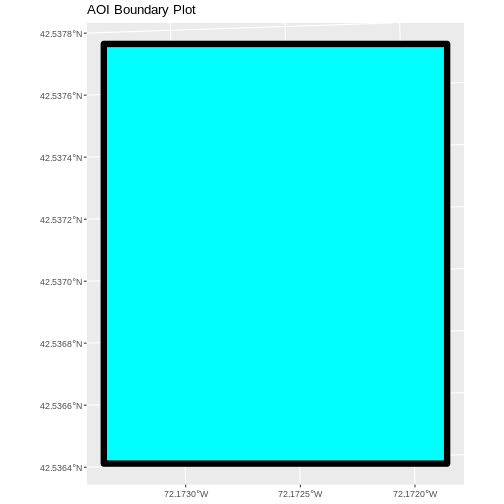
On the boundary plot, the x and y axes are labeled in units of
decimal degrees. However, the CRS for aoi_boundary_harv is
UTM zone 18N, which has units of meters. geom_sf will use
the CRS of the data to set the CRS for the plot, so why is there a
mismatch?
By default, coord_sf() generates a graticule with a CRS
of WGS 84 (where the units are decimal degrees), and this sets our axis
labels. To draw the graticule in the native CRS of our shapefile, we can
set datum=NULL in the coord_sf() function.
Spatial Data Attributes
We introduced the idea of spatial data attributes in an earlier lesson. Now we will explore how to use spatial data attributes stored in our data to plot different features.
Challenge: Import Line and Point Vector Layers
Using the steps above, import the HARV_roads and HARVtower_UTM18N
vector layers into R. Call the HARV_roads object lines_harv
and the HARVtower_UTM18N point_harv.
Answer the following questions:
What type of R spatial object is created when you import each layer?
What is the CRS and extent for each object?
Do the files contain points, lines, or polygons?
How many spatial objects are in each file?
First we import the data:
R
lines_harv <- st_read("data/NEON-DS-Site-Layout-Files/HARV/HARV_roads.shp")
OUTPUT
Reading layer `HARV_roads' from data source
`/home/runner/work/r-raster-vector-geospatial/r-raster-vector-geospatial/site/built/data/NEON-DS-Site-Layout-Files/HARV/HARV_roads.shp'
using driver `ESRI Shapefile'
Simple feature collection with 13 features and 15 fields
Geometry type: MULTILINESTRING
Dimension: XY
Bounding box: xmin: 730741.2 ymin: 4711942 xmax: 733295.5 ymax: 4714260
Projected CRS: WGS 84 / UTM zone 18NR
point_harv <- st_read("data/NEON-DS-Site-Layout-Files/HARV/HARVtower_UTM18N.shp")
OUTPUT
Reading layer `HARVtower_UTM18N' from data source
`/home/runner/work/r-raster-vector-geospatial/r-raster-vector-geospatial/site/built/data/NEON-DS-Site-Layout-Files/HARV/HARVtower_UTM18N.shp'
using driver `ESRI Shapefile'
Simple feature collection with 1 feature and 14 fields
Geometry type: POINT
Dimension: XY
Bounding box: xmin: 732183.2 ymin: 4713265 xmax: 732183.2 ymax: 4713265
Projected CRS: WGS 84 / UTM zone 18NThen we check its class:
R
class(lines_harv)
OUTPUT
[1] "sf" "data.frame"R
class(point_harv)
OUTPUT
[1] "sf" "data.frame"We also check the CRS and extent of each object:
R
st_crs(lines_harv)
OUTPUT
Coordinate Reference System:
User input: WGS 84 / UTM zone 18N
wkt:
PROJCRS["WGS 84 / UTM zone 18N",
BASEGEOGCRS["WGS 84",
DATUM["World Geodetic System 1984",
ELLIPSOID["WGS 84",6378137,298.257223563,
LENGTHUNIT["metre",1]]],
PRIMEM["Greenwich",0,
ANGLEUNIT["degree",0.0174532925199433]],
ID["EPSG",4326]],
CONVERSION["UTM zone 18N",
METHOD["Transverse Mercator",
ID["EPSG",9807]],
PARAMETER["Latitude of natural origin",0,
ANGLEUNIT["Degree",0.0174532925199433],
ID["EPSG",8801]],
PARAMETER["Longitude of natural origin",-75,
ANGLEUNIT["Degree",0.0174532925199433],
ID["EPSG",8802]],
PARAMETER["Scale factor at natural origin",0.9996,
SCALEUNIT["unity",1],
ID["EPSG",8805]],
PARAMETER["False easting",500000,
LENGTHUNIT["metre",1],
ID["EPSG",8806]],
PARAMETER["False northing",0,
LENGTHUNIT["metre",1],
ID["EPSG",8807]]],
CS[Cartesian,2],
AXIS["(E)",east,
ORDER[1],
LENGTHUNIT["metre",1]],
AXIS["(N)",north,
ORDER[2],
LENGTHUNIT["metre",1]],
ID["EPSG",32618]]R
st_bbox(lines_harv)
OUTPUT
xmin ymin xmax ymax
730741.2 4711942.0 733295.5 4714260.0 R
st_crs(point_harv)
OUTPUT
Coordinate Reference System:
User input: WGS 84 / UTM zone 18N
wkt:
PROJCRS["WGS 84 / UTM zone 18N",
BASEGEOGCRS["WGS 84",
DATUM["World Geodetic System 1984",
ELLIPSOID["WGS 84",6378137,298.257223563,
LENGTHUNIT["metre",1]]],
PRIMEM["Greenwich",0,
ANGLEUNIT["degree",0.0174532925199433]],
ID["EPSG",4326]],
CONVERSION["UTM zone 18N",
METHOD["Transverse Mercator",
ID["EPSG",9807]],
PARAMETER["Latitude of natural origin",0,
ANGLEUNIT["Degree",0.0174532925199433],
ID["EPSG",8801]],
PARAMETER["Longitude of natural origin",-75,
ANGLEUNIT["Degree",0.0174532925199433],
ID["EPSG",8802]],
PARAMETER["Scale factor at natural origin",0.9996,
SCALEUNIT["unity",1],
ID["EPSG",8805]],
PARAMETER["False easting",500000,
LENGTHUNIT["metre",1],
ID["EPSG",8806]],
PARAMETER["False northing",0,
LENGTHUNIT["metre",1],
ID["EPSG",8807]]],
CS[Cartesian,2],
AXIS["(E)",east,
ORDER[1],
LENGTHUNIT["metre",1]],
AXIS["(N)",north,
ORDER[2],
LENGTHUNIT["metre",1]],
ID["EPSG",32618]]R
st_bbox(point_harv)
OUTPUT
xmin ymin xmax ymax
732183.2 4713265.0 732183.2 4713265.0 To see the number of objects in each file, we can look at the output
from when we read these objects into R. lines_harv contains
13 features (all lines) and point_harv contains only one
point.
- Metadata for vector layers include geometry type, CRS, and extent.
- Load spatial objects into R with the
st_read()function. - Spatial objects can be plotted directly with
ggplotusing thegeom_sf()function. No need to convert to a dataframe.
according to our new outline. Issue #499
Vector layers have attributes that can be visualized and used for analysis. Let’s identify and query layer attributes, as well as how to subset features by specific attribute values. Then we will learn how to plot a feature according to a set of attribute values.
Query Vector Feature Metadata
As we discussed in the Open and Plot Vector Layers in R episode, we can view metadata associated with an R object using:
-
st_geometry_type()- The type of vector data stored in the object. -
nrow()- The number of features in the object -
st_bbox()- The spatial extent (geographic area covered by) of the object. -
st_crs()- The CRS (spatial projection) of the data.
We started to explore our point_harv object in the
previous episode. To see a summary of all of the metadata associated
with our point_harv object, we can view the object with
View(point_harv) or print a summary of the object itself to
the console.
R
point_harv
OUTPUT
Simple feature collection with 1 feature and 14 fields
Geometry type: POINT
Dimension: XY
Bounding box: xmin: 732183.2 ymin: 4713265 xmax: 732183.2 ymax: 4713265
Projected CRS: WGS 84 / UTM zone 18N
Un_ID Domain DomainName SiteName Type Sub_Type Lat Long
1 A 1 Northeast Harvard Forest Core Advanced Tower 42.5369 -72.17266
Zone Easting Northing Ownership County annotation
1 18 732183.2 4713265 Harvard University, LTER Worcester C1
geometry
1 POINT (732183.2 4713265)We can use the ncol function to count the number of
attributes associated with a spatial object too. Note that the geometry
is just another column and counts towards the total. Let’s look at the
roads file:
R
ncol(lines_harv)
OUTPUT
[1] 16We can view the individual name of each attribute using the
names() function in R:
R
names(lines_harv)
OUTPUT
[1] "OBJECTID_1" "OBJECTID" "TYPE" "NOTES" "MISCNOTES"
[6] "RULEID" "MAPLABEL" "SHAPE_LENG" "LABEL" "BIKEHORSE"
[11] "RESVEHICLE" "RECMAP" "Shape_Le_1" "ResVehic_1" "BicyclesHo"
[16] "geometry" We could also view just the first 6 rows of attribute values using
the head() function to get a preview of the data:
R
head(lines_harv)
OUTPUT
Simple feature collection with 6 features and 15 fields
Geometry type: MULTILINESTRING
Dimension: XY
Bounding box: xmin: 730741.2 ymin: 4712685 xmax: 732232.3 ymax: 4713726
Projected CRS: WGS 84 / UTM zone 18N
OBJECTID_1 OBJECTID TYPE NOTES MISCNOTES RULEID
1 14 48 woods road Locust Opening Rd <NA> 5
2 40 91 footpath <NA> <NA> 6
3 41 106 footpath <NA> <NA> 6
4 211 279 stone wall <NA> <NA> 1
5 212 280 stone wall <NA> <NA> 1
6 213 281 stone wall <NA> <NA> 1
MAPLABEL SHAPE_LENG LABEL BIKEHORSE RESVEHICLE RECMAP
1 Locust Opening Rd 1297.35706 Locust Opening Rd Y R1 Y
2 <NA> 146.29984 <NA> Y R1 Y
3 <NA> 676.71804 <NA> Y R2 Y
4 <NA> 231.78957 <NA> <NA> <NA> <NA>
5 <NA> 45.50864 <NA> <NA> <NA> <NA>
6 <NA> 198.39043 <NA> <NA> <NA> <NA>
Shape_Le_1 ResVehic_1 BicyclesHo
1 1297.10617 R1 - All Research Vehicles Allowed Bicycles and Horses Allowed
2 146.29983 R1 - All Research Vehicles Allowed Bicycles and Horses Allowed
3 676.71807 R2 - 4WD/High Clearance Vehicles Only Bicycles and Horses Allowed
4 231.78962 <NA> <NA>
5 45.50859 <NA> <NA>
6 198.39041 <NA> <NA>
geometry
1 MULTILINESTRING ((730819.2 ...
2 MULTILINESTRING ((732040.2 ...
3 MULTILINESTRING ((732057 47...
4 MULTILINESTRING ((731903.6 ...
5 MULTILINESTRING ((732039.1 ...
6 MULTILINESTRING ((732056.2 ...Challenge: Attributes for Different Spatial Classes
Explore the attributes associated with the point_harv
and aoi_boundary_harv spatial objects.
How many attributes does each have?
Who owns the site in the
point_harvdata object?Which of the following is NOT an attribute of the
point_harvdata object?
- Latitude B) County C) Country
- To find the number of attributes, we use the
ncol()function:
R
ncol(point_harv)
OUTPUT
[1] 15R
ncol(aoi_boundary_harv)
OUTPUT
[1] 2- Ownership information is in a column named
Ownership:
R
point_harv$Ownership
OUTPUT
[1] "Harvard University, LTER"- To see a list of all of the attributes, we can use the
names()function:
R
names(point_harv)
OUTPUT
[1] "Un_ID" "Domain" "DomainName" "SiteName" "Type"
[6] "Sub_Type" "Lat" "Long" "Zone" "Easting"
[11] "Northing" "Ownership" "County" "annotation" "geometry" “Country” is not an attribute of this object.
Explore Values within One Attribute
We can explore individual values stored within a particular
attribute. Comparing attributes to a spreadsheet or a data frame, this
is similar to exploring values in a column. We did this with the
gapminder dataframe in an
earlier lesson. For spatial objects, we can use the same syntax:
objectName$attributeName.
We can see the contents of the TYPE field of our lines
feature:
R
lines_harv$TYPE
OUTPUT
[1] "woods road" "footpath" "footpath" "stone wall" "stone wall"
[6] "stone wall" "stone wall" "stone wall" "stone wall" "boardwalk"
[11] "woods road" "woods road" "woods road"To see only unique values within the TYPE field, we can
use the unique() function for extracting the possible
values of a character variable (R also is able to handle categorical
variables called factors; we worked with factors a little bit in an
earlier lesson.
R
unique(lines_harv$TYPE)
OUTPUT
[1] "woods road" "footpath" "stone wall" "boardwalk" Subset Features
We can use the filter() function from dplyr
that we worked with in an earlier
lesson to select a subset of features from a spatial object in R,
just like with data frames.
For example, we might be interested only in features that are of
TYPE “footpath”. Once we subset out this data, we can use
it as input to other code so that code only operates on the footpath
lines.
R
footpath_harv <- lines_harv %>%
filter(TYPE == "footpath")
nrow(footpath_harv)
OUTPUT
[1] 2Our subsetting operation reduces the features count to
2. This means that only two feature lines in our spatial object have the
attribute TYPE == footpath. We can plot only the footpath
lines:
R
ggplot() +
geom_sf(data = footpath_harv) +
ggtitle("NEON Harvard Forest Field Site", subtitle = "Footpaths") +
coord_sf()
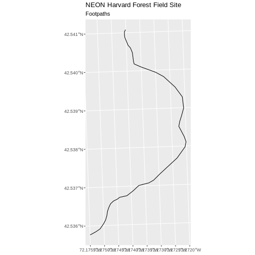
There are two features in our footpaths subset. Why does the plot
look like there is only one feature? Let’s adjust the colors used in our
plot. If we have 2 features in our vector object, we can plot each using
a unique color by assigning a column name to the color aesthetic
(color =). We use the syntax aes(color = ) to
do this. We can also alter the default line thickness by using the
linewidth = parameter, as the default value of 0.5 can be
hard to see. Note that size is placed outside of the aes()
function, as we are not connecting line thickness to a data
variable.
R
ggplot() +
geom_sf(data = footpath_harv, aes(color = factor(OBJECTID)), linewidth = 1.5) +
labs(color = 'Footpath ID') +
ggtitle("NEON Harvard Forest Field Site", subtitle = "Footpaths") +
coord_sf()
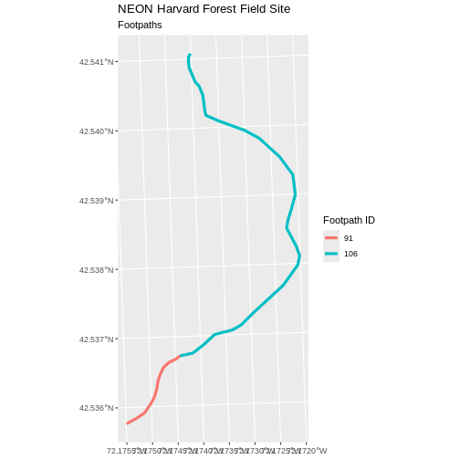
Now, we see that there are in fact two features in our plot!
Challenge: Subset Spatial Line Objects Part 1
Subset out all boardwalk from the lines layer and plot
it.
First we will save an object with only the boardwalk lines:
R
boardwalk_harv <- lines_harv %>%
filter(TYPE == "boardwalk")
Let’s check how many features there are in this subset:
R
nrow(boardwalk_harv)
OUTPUT
[1] 1Now let’s plot that data:
R
ggplot() +
geom_sf(data = boardwalk_harv, linewidth = 1.5) +
ggtitle("NEON Harvard Forest Field Site", subtitle = "Boardwalks") +
coord_sf()
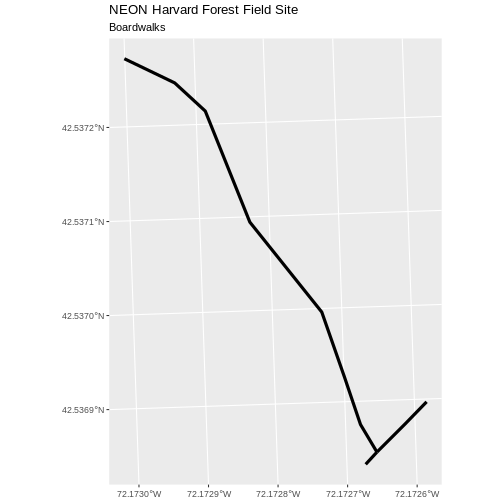
Challenge: Subset Spatial Line Objects Part 2
Subset out all stone wall features from the lines layer
and plot it. For each plot, color each feature using a unique color.
First we will save an object with only the stone wall lines and check the number of features:
R
stonewall_harv <- lines_harv %>%
filter(TYPE == "stone wall")
nrow(stonewall_harv)
OUTPUT
[1] 6Now we can plot the data:
R
ggplot() +
geom_sf(data = stonewall_harv, aes(color = factor(OBJECTID)), linewidth = 1.5) +
labs(color = 'Wall ID') +
ggtitle("NEON Harvard Forest Field Site", subtitle = "Stonewalls") +
coord_sf()
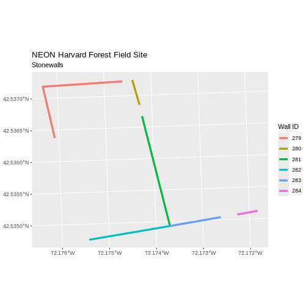
Customize Plots
In the examples above, ggplot() automatically selected
colors for each line based on a default color order. If we don’t like
those default colors, we can create a vector of colors - one for each
feature.
First we will check how many unique values our TYPE attribute has:
R
unique(lines_harv$TYPE)
OUTPUT
[1] "woods road" "footpath" "stone wall" "boardwalk" Then we can create a palette of four colors, one for each feature in our vector object.
R
road_colors <- c("blue", "green", "navy", "purple")
We can tell ggplot to use these colors when we plot the
data.
R
ggplot() +
geom_sf(data = lines_harv, aes(color = TYPE)) +
scale_color_manual(values = road_colors) +
labs(color = 'Road Type') +
ggtitle("NEON Harvard Forest Field Site", subtitle = "Roads & Trails") +
coord_sf()
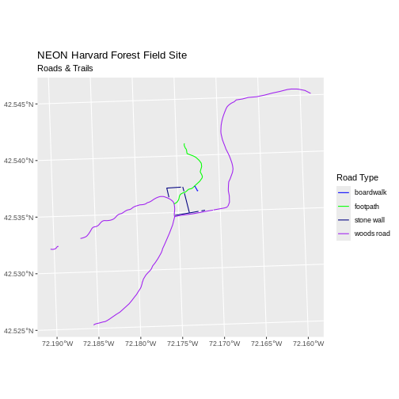
Adjust Line Width
We adjusted line width universally earlier. If we want a unique line width for each attribute category in our spatial object, we can use the same syntax that we used for colors, above.
We already know that we have four different TYPEs in the
lines_HARV object, so we will set four different line widths.
R
line_widths <- c(1, 2, 3, 4)
We can use those line widths when we plot the data.
R
ggplot() +
geom_sf(data = lines_harv, aes(color = TYPE, linewidth = TYPE)) +
scale_color_manual(values = road_colors) +
labs(color = 'Road Type') +
scale_linewidth_manual(values = line_widths) +
ggtitle("NEON Harvard Forest Field Site",
subtitle = "Roads & Trails - Line width varies") +
coord_sf()
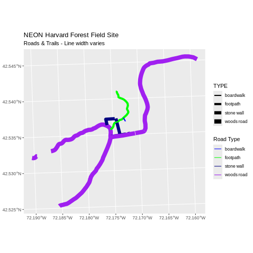
Challenge: Plot Line Width by Attribute
In the example above, we set the line widths to be 1, 2, 3, and 4. Because R orders alphabetically by default, this gave us a plot where woods roads (the last type) were the thickest and boardwalks were the thinnest.
Let’s create another plot where we show the different line types with the following thicknesses:
- woods road size = 6
- boardwalks size = 1
- footpath size = 3
- stone wall size = 2
First we need to look at the values of our data to see what order the road types are in:
R
unique(lines_harv$TYPE)
OUTPUT
[1] "woods road" "footpath" "stone wall" "boardwalk" We then can create our line_width vector setting each of
the levels to the desired thickness.
R
line_width <- c(1, 3, 2, 6)
Now we can create our plot.
R
ggplot() +
geom_sf(data = lines_harv, aes(linewidth = TYPE)) +
scale_linewidth_manual(values = line_width) +
ggtitle("NEON Harvard Forest Field Site",
subtitle = "Roads & Trails - Line width varies") +
coord_sf()
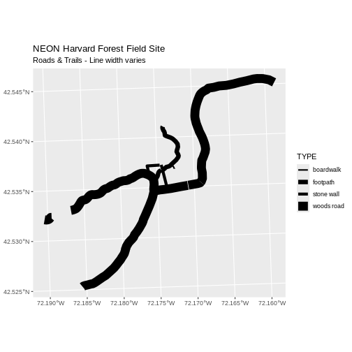
Add Plot Legend
We can add a legend to our plot too. When we add a legend, we use the following elements to specify labels and colors:
Let’s add a legend to our plot. We will use the
road_colors object that we created above to color the
legend. We can customize the appearance of our legend by manually
setting different parameters.
R
ggplot() +
geom_sf(data = lines_harv, aes(color = TYPE), linewidth = 1.5) +
scale_color_manual(values = road_colors) +
labs(color = 'Road Type') +
ggtitle("NEON Harvard Forest Field Site",
subtitle = "Roads & Trails - Default Legend") +
coord_sf()
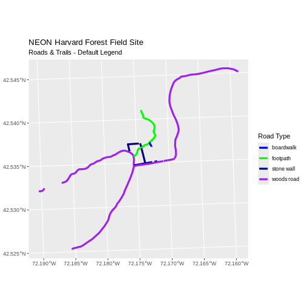
We can change the appearance of our legend by manually setting different parameters.
-
legend.text: change the font size -
legend.box.background: add an outline box
R
ggplot() +
geom_sf(data = lines_harv, aes(color = TYPE), linewidth = 1.5) +
scale_color_manual(values = road_colors) +
labs(color = 'Road Type') +
theme(legend.text = element_text(size = 20),
legend.box.background = element_rect(linewidth = 1)) +
ggtitle("NEON Harvard Forest Field Site",
subtitle = "Roads & Trails - Modified Legend") +
coord_sf()
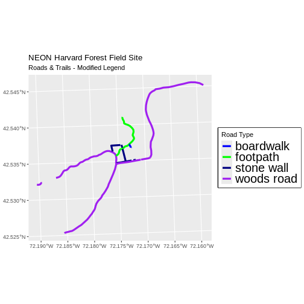
R
new_colors <- c("springgreen", "blue", "magenta", "orange")
ggplot() +
geom_sf(data = lines_harv, aes(color = TYPE), linewidth = 1.5) +
scale_color_manual(values = new_colors) +
labs(color = 'Road Type') +
theme(legend.text = element_text(size = 20),
legend.box.background = element_rect(size = 1)) +
ggtitle("NEON Harvard Forest Field Site",
subtitle = "Roads & Trails - Pretty Colors") +
coord_sf()
WARNING
Warning: The `size` argument of `element_rect()` is deprecated as of ggplot2 3.4.0.
ℹ Please use the `linewidth` argument instead.
This warning is displayed once per session.
Call `lifecycle::last_lifecycle_warnings()` to see where this warning was
generated.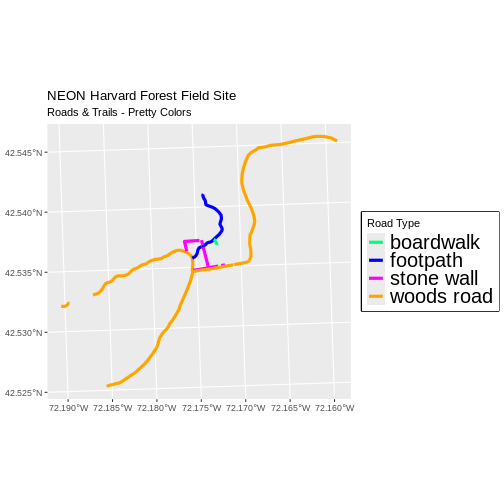
Data Tip
You can modify the default R color palette using the palette method.
For example palette(rainbow(6)) or
palette(terrain.colors(6)). You can reset the palette
colors using palette("default")!
You can also use colorblind-friendly palettes such as those in the viridis package.
Challenge: Plot Lines by Attribute
Create a plot that emphasizes only roads where bicycles and horses
are allowed. To emphasize this, make the lines where bicycles are not
allowed THINNER than the roads where bicycles are allowed. NOTE: this
attribute information is located in the
lines_harv$BicyclesHo attribute.
Be sure to add a title and legend to your map. You might consider a color palette that has all bike/horse-friendly roads displayed in a bright color. All other lines can be black.
First we explore the BicyclesHo attribute to learn the
values that correspond to the roads we need.
R
lines_harv %>%
pull(BicyclesHo) %>%
unique()
OUTPUT
[1] "Bicycles and Horses Allowed" NA
[3] "DO NOT SHOW ON REC MAP" "Bicycles and Horses NOT ALLOWED"Now, we can create a data frame with only those roads where bicycles and horses are allowed.
R
roads_bike_horse <-
lines_harv %>%
filter(BicyclesHo == "Bicycles and Horses Allowed")
Finally, we plot the needed roads after setting them to magenta and a thicker line width.
R
ggplot() +
geom_sf(data = lines_harv) +
geom_sf(data = roads_bike_horse, aes(color = BicyclesHo), linewidth = 2) +
scale_color_manual(values = "magenta") +
ggtitle("NEON Harvard Forest Field Site",
subtitle = "Roads Where Bikes and Horses Are Allowed") +
coord_sf()
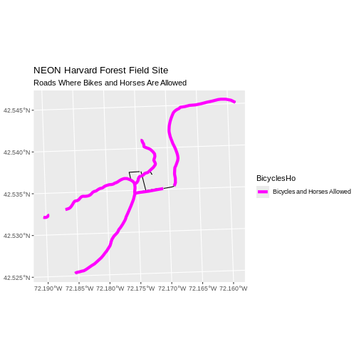
Challenge: Plot Polygon by Attribute
- Create a map of the state boundaries in the United States using the
data located in your downloaded data folder:
NEON-DS-Site-Layout-Files/US-Boundary-Layers/US-State-Boundaries-Census-2014. Apply a line color to each state using itsregionvalue. Add a legend.
First we read in the data and check how many levels there are in the
region column:
R
state_boundary_us <-
st_read("data/NEON-DS-Site-Layout-Files/US-Boundary-Layers/US-State-Boundaries-Census-2014.shp") %>%
# NOTE: We need neither Z nor M coordinates!
st_zm()
OUTPUT
Reading layer `US-State-Boundaries-Census-2014' from data source
`/home/runner/work/r-raster-vector-geospatial/r-raster-vector-geospatial/site/built/data/NEON-DS-Site-Layout-Files/US-Boundary-Layers/US-State-Boundaries-Census-2014.shp'
using driver `ESRI Shapefile'
Simple feature collection with 58 features and 10 fields
Geometry type: MULTIPOLYGON
Dimension: XYZ
Bounding box: xmin: -124.7258 ymin: 24.49813 xmax: -66.9499 ymax: 49.38436
z_range: zmin: 0 zmax: 0
Geodetic CRS: WGS 84R
state_boundary_us$region <- as.factor(state_boundary_us$region)
levels(state_boundary_us$region)
OUTPUT
[1] "Midwest" "Northeast" "Southeast" "Southwest" "West" Next we set a color vector with that many items:
R
colors <- c("purple", "springgreen", "yellow", "brown", "navy")
Now we can create our plot:
R
ggplot() +
geom_sf(data = state_boundary_us, aes(color = region), linewidth = 1) +
scale_color_manual(values = colors) +
ggtitle("Contiguous U.S. State Boundaries") +
coord_sf()
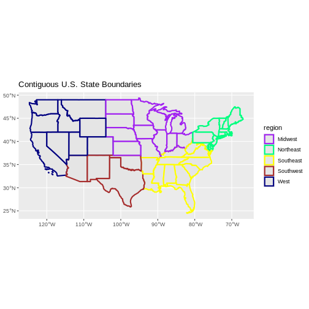
- Spatial objects in
sfare similar to standard data frames and can be manipulated using the same functions. - Almost any feature of a plot can be customized using the various
functions and options in the
ggplot2package.
this comes from old episode 8 (Plot Multiple Vector Layers)
Plotting Multiple Vector Layers
In the previous episode, we learned how to plot information from a single vector layer and do some plot customization including adding a custom legend. However, what if we want to create a more complex plot with many vector layers and unique symbols that need to be represented clearly in a legend?
Now, let’s create a plot that combines our tower location
(point_harv), site boundary
(aoi_boundary_harv) and roads (lines_harv)
spatial objects. We will need to build a custom legend as well.
To begin, we will create a plot with the site boundary as the first
layer. Then layer the tower location and road data on top using
+.
R
ggplot() +
geom_sf(data = aoi_boundary_harv, fill = "grey", color = "grey") +
geom_sf(data = lines_harv, aes(color = TYPE), size = 1) +
geom_sf(data = point_harv) +
ggtitle("NEON Harvard Forest Field Site") +
coord_sf()
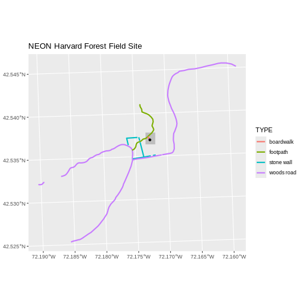
Next, let’s build a custom legend using the symbology (the colors and
symbols) that we used to create the plot above. For example, it might be
good if the lines were symbolized as lines. In the previous episode, you
may have noticed that the default legend behavior for
geom_sf is to draw a ‘patch’ for each legend entry. If you
want the legend to draw lines or points, you need to add an instruction
to the geom_sf call - in this case,
show.legend = 'line'.
R
ggplot() +
geom_sf(data = aoi_boundary_harv, fill = "grey", color = "grey") +
geom_sf(data = lines_harv, aes(color = TYPE),
show.legend = "line", size = 1) +
geom_sf(data = point_harv, aes(fill = Sub_Type), color = "black") +
scale_color_manual(values = road_colors) +
scale_fill_manual(values = "black") +
ggtitle("NEON Harvard Forest Field Site") +
coord_sf()
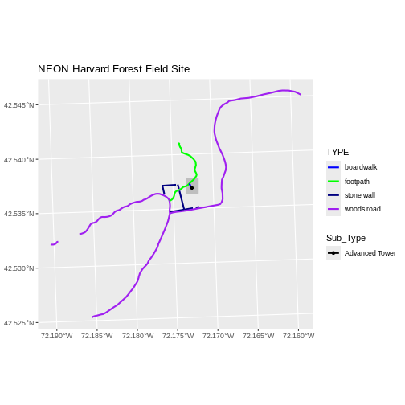
Now lets adjust the legend titles by passing a name to
the respective color and fill palettes.
R
ggplot() +
geom_sf(data = aoi_boundary_harv, fill = "grey", color = "grey") +
geom_sf(data = point_harv, aes(fill = Sub_Type)) +
geom_sf(data = lines_harv, aes(color = TYPE), show.legend = "line",
size = 1) +
scale_color_manual(values = road_colors, name = "Line Type") +
scale_fill_manual(values = "black", name = "Tower Location") +
ggtitle("NEON Harvard Forest Field Site") +
coord_sf()
Finally, it might be better if the points were symbolized as a
symbol. We can customize this using shape parameters in our
call to geom_sf: 16 is a point symbol, 15 is a box.
Data Tip
To view a short list of shape symbols, type
?pch into the R console.
R
ggplot() +
geom_sf(data = aoi_boundary_harv, fill = "grey", color = "grey") +
geom_sf(data = point_harv, aes(fill = Sub_Type), shape = 15) +
geom_sf(data = lines_harv, aes(color = TYPE),
show.legend = "line", size = 1) +
scale_color_manual(values = road_colors, name = "Line Type") +
scale_fill_manual(values = "black", name = "Tower Location") +
ggtitle("NEON Harvard Forest Field Site") +
coord_sf()
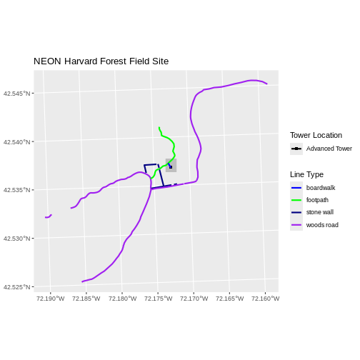
Challenge: Plot Polygon by Attribute
Using the
NEON-DS-Site-Layout-Files/HARV/PlotLocations_HARV.shpESRIshapefile, create a map of study plot locations, with each point colored by the soil type (soilTypeOr). How many different soil types are there at this particular field site? Overlay this layer on top of thelines_harvlayer (the roads). Create a custom legend that applies line symbols to lines and point symbols to the points.Modify the plot above. Tell R to plot each point, using a different symbol of
shapevalue.
First we need to read in the data and see how many unique soils are
represented in the soilTypeOr attribute.
R
plot_locations <-
st_read("data/NEON-DS-Site-Layout-Files/HARV/PlotLocations_HARV.shp")
OUTPUT
Reading layer `PlotLocations_HARV' from data source
`/home/runner/work/r-raster-vector-geospatial/r-raster-vector-geospatial/site/built/data/NEON-DS-Site-Layout-Files/HARV/PlotLocations_HARV.shp'
using driver `ESRI Shapefile'
Simple feature collection with 21 features and 25 fields
Geometry type: POINT
Dimension: XY
Bounding box: xmin: 731405.3 ymin: 4712845 xmax: 732275.3 ymax: 4713846
Projected CRS: WGS 84 / UTM zone 18NR
plot_locations$soilTypeOr <- as.factor(plot_locations$soilTypeOr)
levels(plot_locations$soilTypeOr)
OUTPUT
[1] "Histosols" "Inceptisols"Next we can create a new color palette with one color for each soil type.
R
blue_orange <- c("cornflowerblue", "darkorange")
Finally, we will create our plot.
R
ggplot() +
geom_sf(data = lines_harv, aes(color = TYPE), show.legend = "line") +
geom_sf(data = plot_locations, aes(fill = soilTypeOr),
shape = 21, show.legend = 'point') +
scale_color_manual(name = "Line Type", values = road_colors,
guide = guide_legend(override.aes = list(linetype = "solid",
shape = NA))) +
scale_fill_manual(name = "Soil Type", values = blue_orange,
guide = guide_legend(override.aes = list(linetype = "blank", shape = 21,
colour = "black"))) +
ggtitle("NEON Harvard Forest Field Site") +
coord_sf()
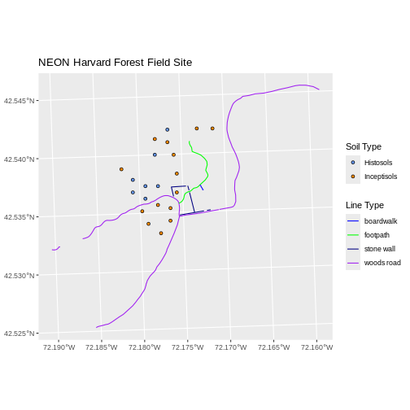
If we want each soil to be shown with a different symbol, we can give
multiple values to the scale_shape_manual() argument.
R
ggplot() +
geom_sf(data = lines_harv, aes(color = TYPE), show.legend = "line", size = 1) +
geom_sf(data = plot_locations, aes(fill = soilTypeOr, shape = soilTypeOr),
show.legend = 'point', size = 3) +
scale_shape_manual(name = "Soil Type", values = c(21, 22)) +
scale_color_manual(name = "Line Type", values = road_colors,
guide = guide_legend(override.aes = list(linetype = "solid", shape = NA))) +
scale_fill_manual(name = "Soil Type", values = blue_orange,
guide = guide_legend(override.aes = list(linetype = "blank", shape = c(21, 22), color = "black"))) +
ggtitle("NEON Harvard Forest Field Site") +
coord_sf()
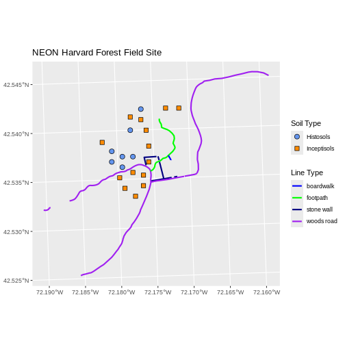